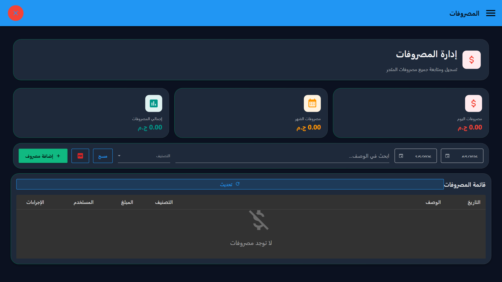
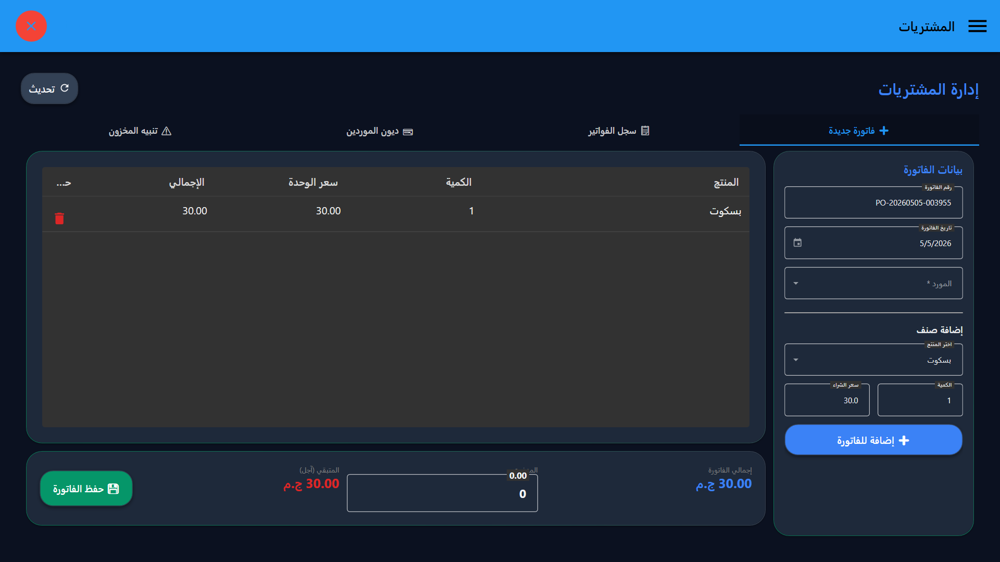
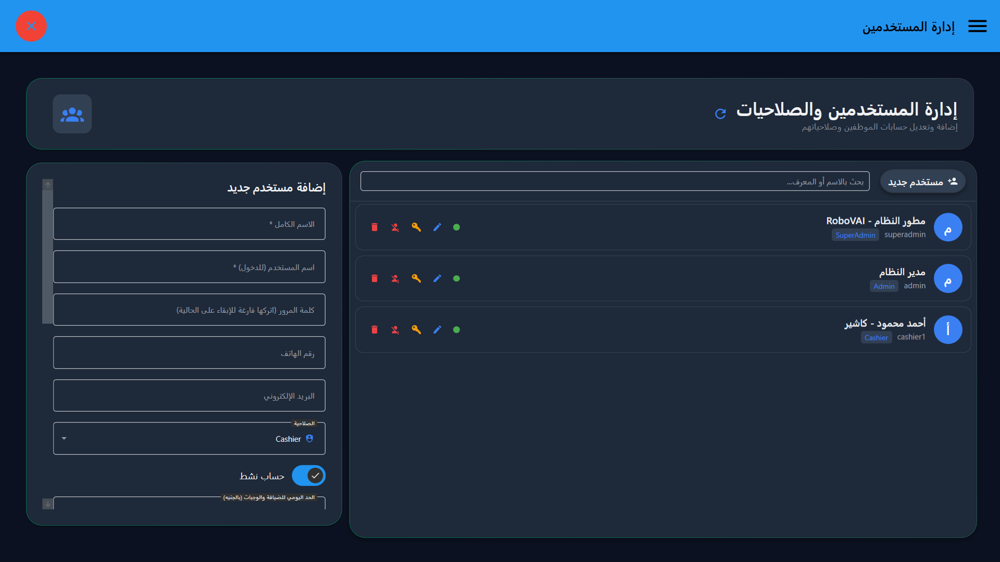

دليل الاستخدام الشامل
كل اللي محتاج تعرفه عشان تدير مكانك باحترافية وسرعة الصاروخ 🚀
لوحة القيادة (Dashboard)
عينك على فلوسك وحركة مكانك لحظة بلحظةبمجرد ما تفتح السيستم، لوحة القيادة بتديك الخلاصة: إجمالي المبيعات، عدد الفواتير، الأرباح الصافية، والمنتجات اللي قربت تخلص عشان تلحق تطلبها. كله قدام عينك في شاشة واحدة شيك ومريحة.

تلميحة احترافية
الشاشة بتتحدث تلقائياً مع كل فاتورة بتضرب. تقدر تعتمد عليها عشان تقيم أداء الشفت الحالي وتعرف أكتر منتجات بتتباع (Best Sellers).
الدخول الآمن (Login)
محدش هيلعب في الحسابات من وراكشاشة الدخول مصممة عشان تحمي بياناتك. كل كاشير أو مدير ليه الباسورد الخاص بيه، والسيستم بيسجل مين اللي دخل وعمل إيه بالظبط، عشان مفيش قرش يضيع.

كود المدير (PIN Code)
لو الكاشير حب يعمل مرتجع أو يمسح فاتورة، السيستم هيطلب منه الـ PIN الخاص بالمدير. أمان 100%.
كاشير المبيعات (Touch POS)
طلقة في الزحمة.. الكاشير اللي بيفهمكقلب النظام النابض! شاشة بيع ذكية جداً بتدعم اللمس (Touch) أو الماوس. بتعرض الأقسام والصور بشكل يفتح النفس، وبتقرأ الباركود أوتوماتيك من غير ما تدوس على أي زرار. مصممة عشان تخلص الطابور في ثواني.

اختصارات الكيبورد السحرية
عشان تشتغل بسرعة الصاروخ، استخدم الاختصارات دي من غير ما تلمس الماوس:
- F1 إضافة منتج يدوي بالباركود
- F2 تأكيد الطلب والدفع
- Ctrl + Enter تأكيد الطلب السريع
- F3 فتح درج النقدية
- F4 تفريغ الفاتورة (إلغاء)
إدارة الجلسات (Sessions/Rentals)
للبلايستيشن، الكافيهات، وغرف الاجتماعاتافتح طاولة أو جهاز، والسيستم هيبدأ يحسب الوقت أوتوماتيك بالقرش. العميل طلب مشاريب؟ ضيفها على نفس الجلسة بكل سهولة. ولما يخلص، هتدوس "إنهاء" والسيستم هيحسب إجمالي الوقت والطلبات في فاتورة واحدة شيك.

تقفيل الوردية (Z-Report)
حسابك بالقرش.. وداعا لعجز الدرجآخر الشفت، الكاشير بيقفل ورديته. السيستم هيقولك المفروض الدرج يكون فيه كام بالضبط (كاش، فيزا، آجل). وهيطلعلك تقرير مطبوع (Z-Report) يطابق النقدية الفعلية بالمفترضة عشان لو فيه عجز أو زيادة تعرفه فوراً.

أرشيف الفواتير (Invoices)
استرجع واطبع أي فاتورة في أي وقتكل فاتورة بتتسجل هنا بالتاريخ والوقت والكاشير اللي ضربها. عميل طلب نسخة تانية من الفاتورة؟ ابحث برقم الفاتورة أو رقم التليفون واطبعها بضغطة زر سواء على طابعة ريسيت صغيرة أو A4 كبيرة.

المرتجعات (Returns)
المرتجعات بدون لخبطة في المخزنعميل عايز يرجع منتج؟ اختار الفاتورة، حدد المنتج، والسيستم هيعمل الآتي أوتوماتيك: هيرجع البضاعة للمخزن، ويخصم الفلوس من درج النقدية، ويسجل حركة المرتجع في التقرير عشان مفيش حاجة تقع منك.

الأقسام (Categories)
رتب بضاعتك ومنيو مطعمك باحترافيةقسم منتجاتك (مثلاً: مشروبات ساخنة، وجبات، حلويات). الأقسام دي هي اللي هتظهر للكاشير في شاشة البيع بألوان وصور مميزة عشان يوصل للمنتج بسرعة من غير ما يدور كتير.

المخزون والمنتجات (Inventory)
بضاعتك كلها تحت السيطرةسجل كل منتجاتك، حط سعر البيع وسعر التكلفة والباركود. السيستم هينبهك لو فيه منتج رصيده قل في المخزن. كمان تقدر تحط صورة لكل منتج عشان يسهل على الكاشير التعرف عليه.

العملاء والديون (Customers)
نوتة إلكترونية للزباين الشكك والآجلعندك زباين بتسحب شغل وتدفع بعدين؟ سجل العميل هنا وتابع كشف حسابه. أي فاتورة (آجل) بتنزل في حسابه أوتوماتيك، ولما يسدد جزء من المديونية بيتخصم من عليه ويطبعله إيصال سداد.

المصروفات (Expenses)
فلوسك راحت فين؟الكهرباء، الإيجار، بوفيه العمال.. سجل أي مصروف بيخرج من الدرج. المصروفات دي بتتخصم من صافي أرباحك في التقارير وبتسمع في تقفيلة الوردية عشان الدرج يطلع مظبوط بالظبط.

الموردين (Suppliers)
إدارة حسابات الموردين والشركاتسجل بيانات الشركات اللي بتوردلك البضاعة، وتابع مديونياتهم. لو نزلت بضاعة ومأجل فلوسها، هتتسجل في حساب المورد وتقدر تطلع كشف حساب مفصل لكل مورد دفع تله إيه وباقي عليه كام.

المشتريات (Purchases)
إذن استلام البضاعة (أوامر الشراء)بضاعة جديدة دخلت المحل؟ أعمل بيها أمر شراء. السيستم هيزود الكميات في المخزن أوتوماتيك، ويحسب إجمالي فاتورة الشراء، ويضيفها على حساب المورد أو يخصمها من الدرج لو الدفع كاش.

نقاط الولاء (Loyalty Points)
خلي زباينك دايماً ترجعلكنظام ذكي لربط العميل بمكانك. كل ما يشتري، بياخد نقاط. السيستم بيقسم العملاء لمستويات (فضي - ذهبي - بلاتيني). العميل يقدر يستبدل النقاط دي بخصومات في المرات الجاية، وده بيزود مبيعاتك.

التقارير (Detailed Reports)
القرار الصح محتاج داتا صحكشف حساب كامل لمكانك. تقارير المبيعات، الأرباح، تقييم أداء كل كاشير مين بيبيع أكتر، وحركة الأصناف. تقدر تصدر أي تقرير بصيغة Excel أو PDF أو تطبعه عشان تراجع حساباتك في البيت.

المستخدمين (Users & Roles)
كل موظف وصلاحياتهضيف الكاشير، المدير، والمحاسب. حدد لكل واحد يقدر يفتح إيه وميفتحش إيه. الكاشير ميقدرش يشوف الأرباح ولا يمسح فواتير، لكن المدير يقدر يعمل كل حاجة. أمان تام لبياناتك.

سجل النشاط (Audit Log)
الصندوق الأسود بتاع المحلمين مسح الفاتورة دي؟ ومين غير سعر المنتج ده؟ سجل النشاط بيسجل كل حركة بتحصل على السيستم بالثانية واسم الموظف، عشان لو حصل أي تلاعب تعرف تصطاده فوراً.

الإعدادات (Settings)
خلي السيستم يتكلم لغتكمن صفحة الإعدادات تقدر تضبط كل تفاصيل الفرع: اسم المحل، شعار الطابعة، بيانات الضريبة، اسم الكاشير على الفاتورة، وإعدادات الاتصال بالطابعة الحرارية. كل إعداد بيتحفظ فوراً من غير ما تعيد تشغيل البرنامج.
إعداد الطابعة
اختار اسم البورت بتاع الطابعة الحرارية (مثلاً USB001 أو COM3) واختبرها بزر "طباعة اختبار" عشان تتأكد إنها شغالة بشكل صح قبل ما تبدأ الشفت.
النسخ الاحتياطي
من الإعدادات تقدر تعمل نسخة احتياطية من قاعدة البيانات بضغطة زر. احتفظ بنسخة كل أسبوع على USB خارجي.
ربط WMS الويب عبر QR 🆕
وصّل كاشيرك بهاتفك في ثوانٍنظام RoboVAI v2.0 بيجيب معاه تطبيق ويب اسمه Smart Inventory Pro (WMS) — بيشتغل على أي موبايل أو تابلت من المتصفح بدون تثبيت. تقدر تربطه بكاشير الويندوز بثوانٍ عبر QR كود.
خطوات الربط (Pairing)
- افتح برنامج الكاشير (SmartPOS WPF)
- اذهب لـ الإعدادات → تبويب "ربط هذا الجهاز بـ WMS"
- اضغط "توليد QR الربط"
- افتح pos.robovai.tech/wms على هاتفك
- من قائمة ≡ → الإعدادات → "ربط بكاشير RoboVAI POS"
- امسح QR الظاهر على شاشة الكاشير
- ✅ ستظهر رسالة "مرتبط بكاشير: [اسم الجهاز]"
المزامنة السحابية (Firebase)
بعد الربط، تقدر تصدر بيانات المخزون من الكاشير وتستوردها في WMS والعكس. كل بيانات WMS محفوظة على Firebase Cloud — آمنة ومتاحة من أي مكان.
- سجّل بحسابك على WMS (Google أو إيميل)
- أضف المنتجات والفئات من أي جهاز
- المخزون يتزامن بين الهاتف والكاشير
- تقارير مبسطة على الهاتف في أي وقت
رابط تطبيق WMS
التطبيق متاح على: pos.robovai.tech/wms
يعمل على Android وiOS وأي متصفح حديث. يمكن تثبيته على الهاتف كـ PWA من خيار "إضافة للشاشة الرئيسية".
تبادل البيانات
من داخل WMS، اضغط "استيراد من POS" لجلب قائمة المنتجات من الكاشير. والعكس من داخل الكاشير اضغط "تصدير للـ WMS" لرفع أحدث بيانات المخزون.
الإعدادات (Settings)
ظبط السيستم على مزاجكشاشة التحكم الكاملة. من هنا تقدر ترفع لوجو المحل اللي هيطبع على الريسيت، تحدد الطابعات (طابعة الكاشير وطابعة المطبخ)، تظبط سكانر الباركود، وتتحكم في ضريبة القيمة المضافة ودرج النقدية.